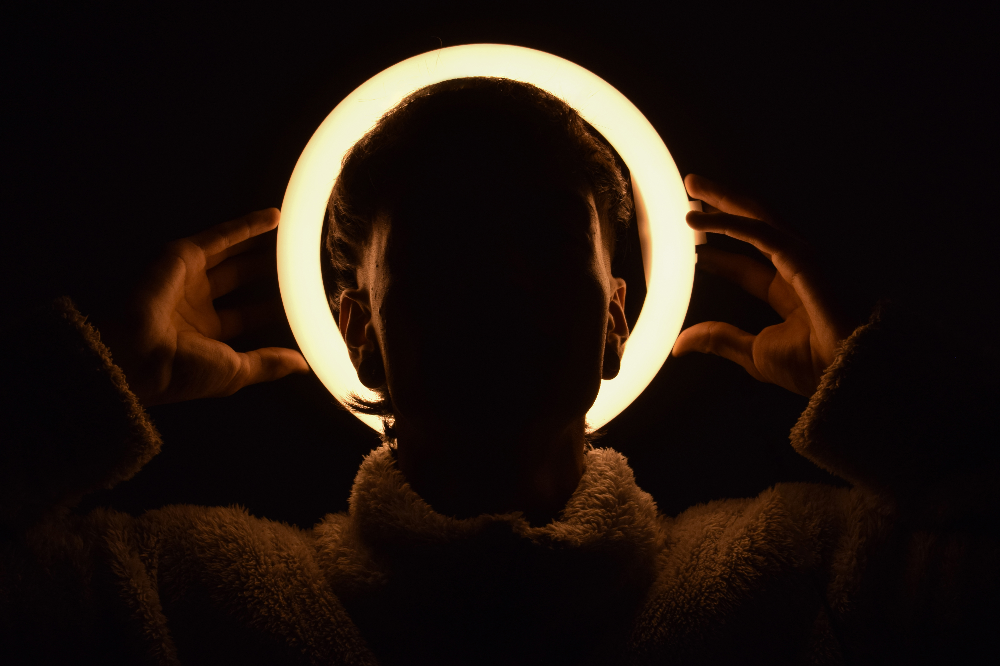
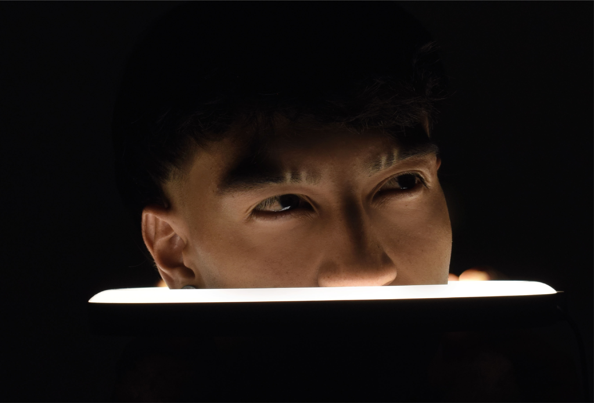

Fotografía de Producto
Imágenes diseñadas para destacar la identidad y los detalles de cada producto.
Musa y Lente
Explora una selección de fotografías realizadas por Musa y Lente, donde cada proyecto busca capturar momentos, emociones y detalles que cuentan una historia.
Imágenes diseñadas para destacar la identidad y los detalles de cada producto.

